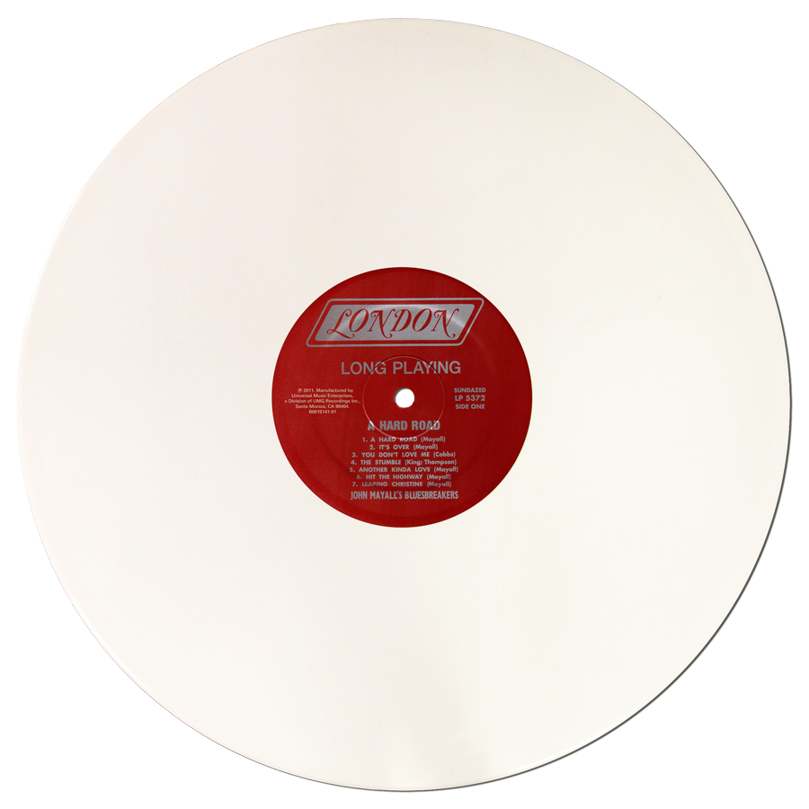
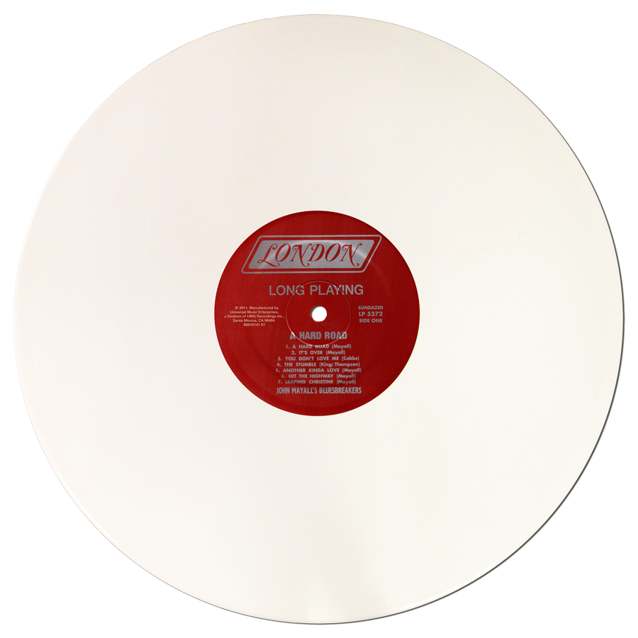

Американская певица, чье имя стало синонимом музыкальной революции нового поколения. Она ворвалась в индустрию в 2015 году, когда её песня Ocean Eyes, записанная в домашней студии, неожиданно стала вирусным хитом. С тех пор Айлиш покорила мировые чарты своим уникальным звучанием, мрачной эстетикой и неподражаемым стилем, который балансирует между хрупкостью и дерзостью.
Её дебютный альбом When We All Fall Asleep, Where Do We Go? (2019) сделал её мировой суперзвездой, а такие хиты, как Bad Guy и Bury a Friend, закрепили за ней статус голосa поколения. Айлиш экспериментирует с жанрами, сочетая поп, инди и электронное звучание с необычной подачей и глубокими текстами, в которых она откровенно говорит о своих эмоциях, тревогах и переживаниях.
Билли также известна своей аутентичностью и смелостью — она отвергает традиционные стандарты индустрии и выступает за самовыражение и бодипозитив. Её фирменный стиль — мешковатая одежда, кислотные оттенки волос и минималистичный макияж — стал символом свободы быть собой.
Несмотря на юный возраст, Айлиш уже обладает множеством наград, включая несколько «Грэмми», и продолжает вдохновлять миллионы поклонников по всему миру. Её музыка — это не просто мелодии, а голос целого поколения, говорящий о темах, которые раньше замалчивались.